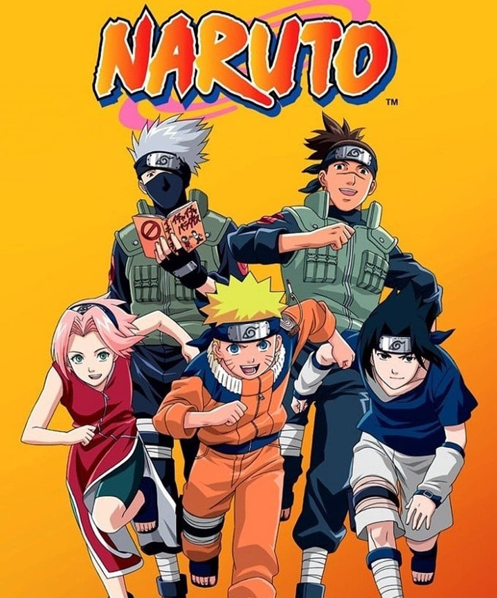
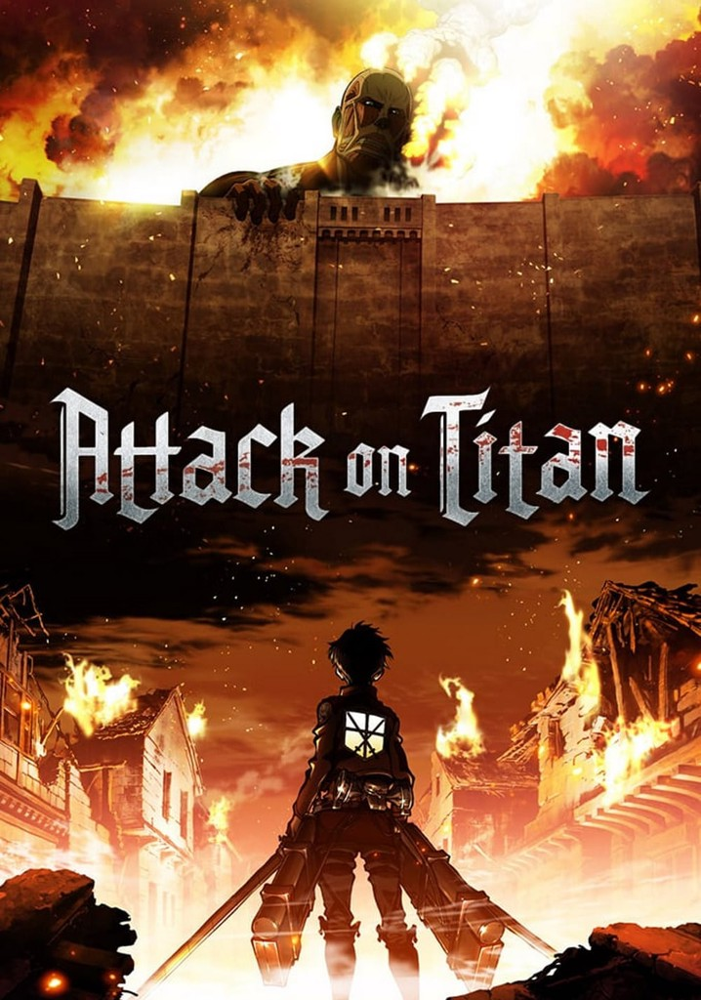
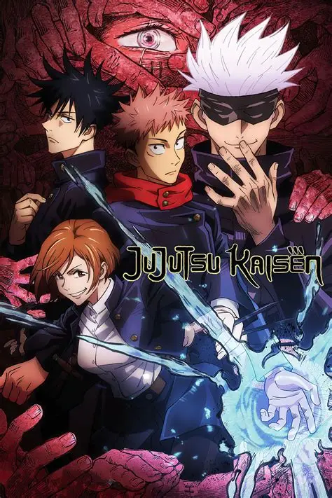
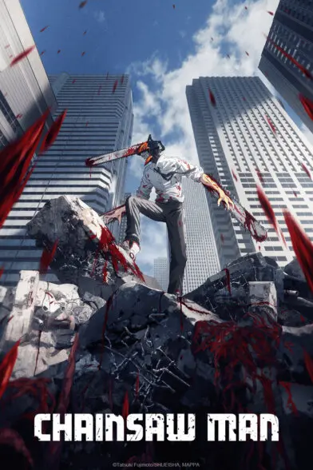
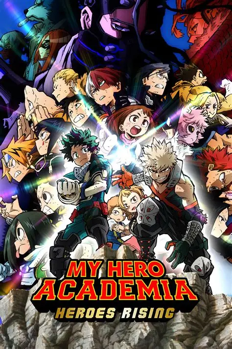
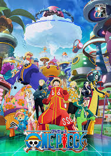

Animes Populares

Naruto
Sub | Dob

Attack on Titan
Sub | Dob

Demon Slayer
Sub | Dob

Jujutsu Kaisen
Sub | Dob

Chainsaw Man
Sub | Dob

Fullmetal Alchemist
Sub | Dob

Death Note
Sub | Dob

My Hero Academia
Sub | Dob

One Punch Man
Sub | Dob

Mob Psycho 100
Sub | Dob

Dragon Ball
Sub | Dob

One Piece
Sub | Dob